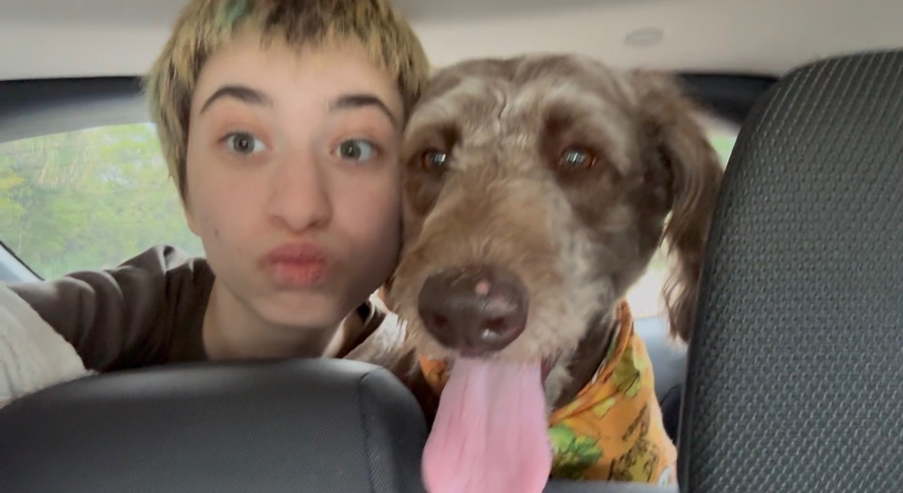

I strive to create a visual image for people using journalism. I write about the scene that is happening in a moment, not just the words spoken to me. I capture the vibe of the room, the emotion of the people, and the scene to gain a deeper knowledge than what is just happening in the verbal part of events. I read between the lines and look for details that people would usually miss. Every detail adds more to the context of the story. I write details that would be shown outside a photo that would be taken. I believe strong journalism allows readers to feel as though they are present. This approach helps humanize stories.

Class Website